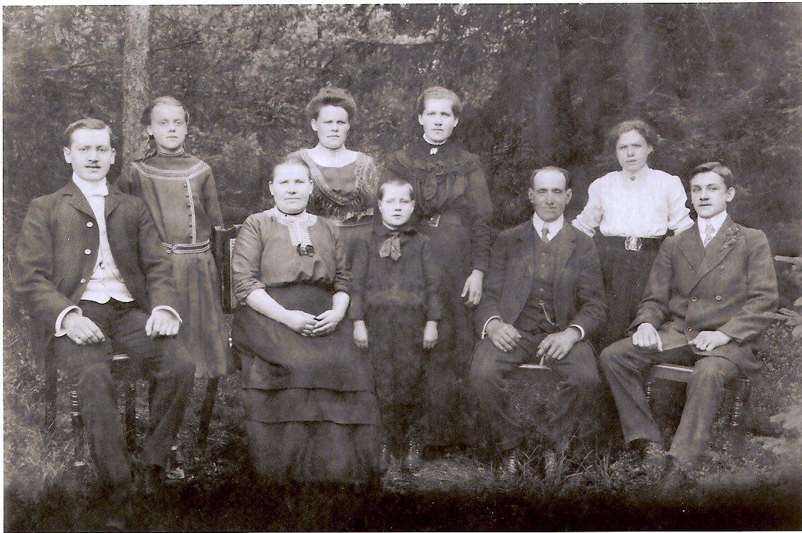
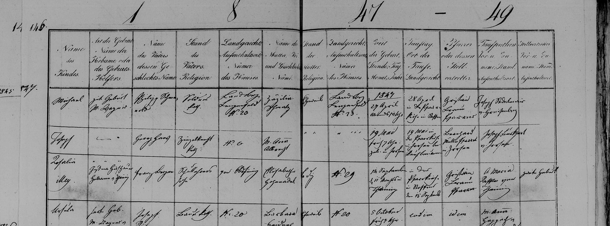
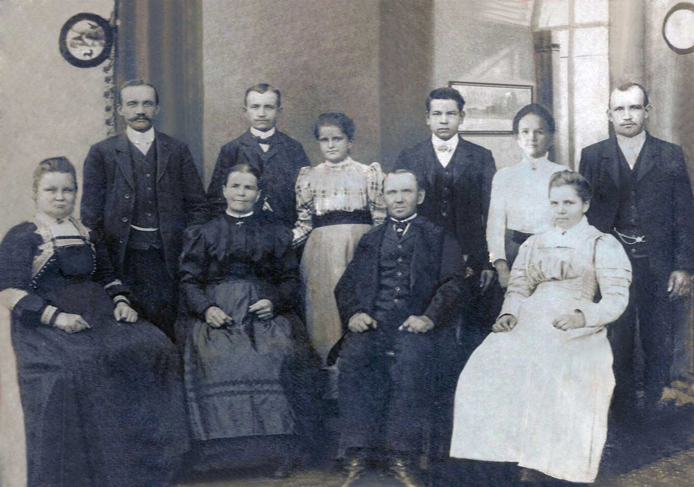
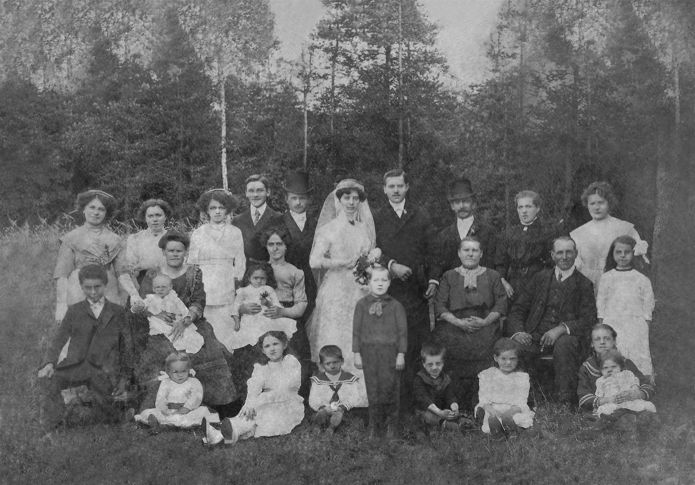

Parte II · O Vapor Formosa e a Floresta
Capítulo 4 — Antes da Partida: Das Olarias de Stoffen às Rodas de Heumaden
Deslocamento previsto: Marselha, Rio de Janeiro, Laguna. Mar de través, quarentena prolongada. Na serra, mata fechada e promessas que não se cumprem.
48,0° N · 10,9° L — Stoffen · 49,2° N · 12,1° L — Maxhütte-Haidhof · 49,6° N · 12,4° L — Heumaden, Baviera
Toda frente fria tem uma origem que ninguém vê: um pedaço de ar que, um dia, ficou parado tempo demais no mesmo lugar.
Duas horas da madrugada em Heumaden
Heumaden, Alto Palatinado — 7 de abril de 1888
Imagino que a parteira tenha vindo a pé. Em abril, no Alto Palatinado, as estradas de terra ainda guardam a umidade do degelo, e uma carroça faria mais barulho do que a ocasião pedia. Ela se chamava Glas — é tudo o que o livro paroquial diz sobre ela, um sobrenome e uma função, Hebamme —, e é provável que conhecesse cada casa da aldeia pela porta da cozinha. Heumaden não era grande: um punhado de casas de pedra e madeira, alguns celeiros, campos ondulados que descem em direção às florestas escuras da fronteira com a Boêmia. A igreja ficava em Moosbach, a paróquia de São Pedro e São Paulo, e era para lá que se levavam os recém-nascidos, os noivos e os mortos.
Às duas horas da madrugada daquele 7 de abril, na casa do Ökonom Georg Adam Meier, nasceu uma menina. A mãe, Franziska Voit, tinha vinte e seis anos; o pai, vinte e nove. Casados havia pouco mais de três anos — a cerimônia fora em 23 de novembro de 1884, na mesma igreja de Moosbach —, já tinham um menino, Johann Baptist, e uma menina, Barbara. A recém-nascida recebeu o nome de Maria Katharina. Foi batizada no mesmo dia, como se fazia na Baviera católica; a madrinha, diz o livro da paróquia, foi Katharina Reichenberger, lavradora de Burgtreswitz, a aldeia da mãe, e daí, suponho, veio o segundo nome.
Escrevo essas linhas com uma liberdade que preciso confessar a vocês, Matheus e Lucas. Eu não sei se chovia naquela madrugada. Não sei se a parteira veio a pé, se havia lamparina acesa, se o pai esperou na cozinha ou no curral. O que sei vem de um livro escrito à mão em letra gótica, que só vou abrir de verdade mais adiante, quando contar a viagem de inverno de 2018. Por ora, basta dizer que os fatos estão lá: o dia, a hora, o nome da parteira, a profissão do pai. O resto é o que um meteorologista faz quando tem uma única estação de observação e precisa desenhar o mapa inteiro — interpola, com cuidado, sabendo que pode errar.
E há uma coisa que posso afirmar com alguma segurança, porque é climatologia e não genealogia: as madrugadas de início de abril naquela parte da Baviera são frias. O Alto Palatinado fica no coração do continente, longe do Atlântico que amacia os invernos da Renânia. Quando o anticiclone se instala sobre a Europa Central e o ar seco desce do leste, por cima das montanhas da Boêmia, a temperatura despenca durante a noite. Os camponeses tinham nome para esse vento que vinha da fronteira: Böhmischer Wind, o vento boêmio, frio, persistente, que seca a pele e congela as poças. Gosto de pensar que a primeira coisa que a Mota respirou neste mundo foi um pouco desse ar continental — o mesmo ar que, setenta e tantos anos depois, ela diria aos netos, num alemão que eles mal entendiam, que nunca mais tinha sentido.
O pai de Maria, Georg Adam, era filho de Michael Meier, que em Heumaden exercia o ofício de Wagner. A palavra não tem tradução exata em português; Wagner é o que faz Wagen, carroças, e sobretudo as rodas das carroças. Era um ofício de precisão: escolher a madeira, curvá-la, encaixar os raios no cubo, ajustar o aro de ferro aquecido que, ao esfriar, aperta a roda inteira como um abraço. Georg Adam aprendeu o ofício do pai e, ao casar, aparece também como Ökonom, palavra que nos registros bávaros indica quem tem terra e a cultiva — um pequeno lavrador com alguma posse. A mãe, Franziska, vinha de Burgtreswitz, aldeia vizinha, filha de Johann Voit, Bauer, camponês proprietário, e de Barbara Woppmann.
Depois de Maria vieram mais irmãos: Margaretha em 1890, Josef em 1892, Georg em 1895, Anna em 1898. Uma casa cheia, num lugar onde a terra não se multiplicava. Guardem essa frase, porque ela é a chave deste capítulo inteiro.

O oleiro de Stoffen
Stoffen, Alta Baviera — maio de 1847
O outro lado da história começa quarenta e um anos antes e quase trezentos quilômetros a sudoeste, numa aldeia chamada Stoffen, perto de Landsberg am Lech, na Alta Baviera. Lá vivia um homem chamado Georg Haas, que o livro de batismos descreve como Ziegelknecht.
Demorei a entender essa palavra. Ziegel é tijolo, ou telha; Knecht é servo, empregado, peão. Um Ziegelknecht era o trabalhador braçal de uma olaria: quem cavava o barro, amassava, enchia as fôrmas, empilhava os tijolos para secar ao sol e depois alimentava o forno. Não era o dono da olaria, nem o mestre oleiro. Era o homem das mãos sujas de argila, que ganhava por jornada ou por temporada, e que no inverno, quando o barro congelava e os fornos se apagavam, provavelmente procurava outro serviço.
Em 19 de maio de 1847, Georg Haas e sua mulher, Maria Anna Albrecht, tiveram um filho. Foi batizado no dia seguinte, 20 de maio, com o nome de Joseph. No registro, leio que a família morava na casa de número 6 de Stoffen — ou pelo menos é o que a minha leitura de principiante da letra gótica consegue extrair daquele número inclinado.
Ficha do Arquivo — Livro de batismos da paróquia de Stoffen (Diocese de Augsburg), registros de 1847–1849. Batizando: Joseph; pai: Georg Haas, Ziegelknecht, católico; mãe: M. Anna Albrecht; nascido em 19/05/1847, batizado em 20/05/1847. Imagem no repositório: imagens/batismo_joseph_haas_1847_stoffen.png. A grafia “Joseph” do batismo convive, nos documentos posteriores, com “Josef”; trata-se da mesma pessoa.

Eu poderia passar por esse registro como se passa por uma linha de planilha: nome, data, filiação. Mas a palavra Ziegelknecht me prendeu, porque ela carrega uma pergunta que atravessa este livro inteiro: por que tanta gente da nossa família, dos dois lados do oceano, trabalhou com as mãos em coisas que não eram suas?
A resposta mais honesta que encontrei passa pela herança. Na Baviera antiga — a Alta Baviera de Stoffen, o Alto Palatinado de Heumaden —, a terra camponesa não se dividia entre os filhos. Vigorava, pelo costume e muitas vezes pela lei, o que os alemães chamam de Anerbenrecht: o direito do herdeiro único. A propriedade passava inteira a um filho, em geral o mais velho ou o mais novo, conforme o lugar. Os outros recebiam, quando muito, uma compensação em dinheiro, um enxoval, o direito de morar na casa enquanto solteiros. A lógica era a da sobrevivência do sítio: uma fazenda retalhada a cada geração deixa de alimentar quem quer que seja. Na Renânia e no Mosela, de onde vieram os antepassados da minha mãe, a regra era o oposto — a partilha igualitária, que picava a terra em faixas cada vez mais estreitas —, e vou contar essa outra história nos capítulos da Parte III. Os dois sistemas tinham o mesmo efeito final: empurravam gente para fora da terra.
Na Baviera, o irmão que não herdava tinha poucos caminhos. Podia ficar como peão na propriedade do irmão. Podia aprender um ofício — e os ofícios eram, em boa parte, os do barro, da pedra, da madeira e do ferro. Podia ir para a cidade, para as fábricas que começavam a surgir no meio do século. Ou podia emigrar. Não sei se Georg Haas era um filho que não herdou; o registro não diz de onde ele veio. Mas um Ziegelknecht em 1847 é, quase por definição, alguém que não tinha terra própria para trabalhar. E o filho dele, Joseph, faria o caminho seguinte dessa escada: da olaria para a fábrica.
Não pretendo, aqui, transformar tudo em teoria. Volto ao assunto da herança no capítulo 14, onde ele merece mais espaço. Só peço que vocês notem o padrão, porque ele se repete: o barro de Stoffen, o gesso de Sandberg, o prumo de Ituporanga. Gerações de homens Haas sustentaram suas famílias construindo coisas que outros iam habitar.
A fumaça da Maximilianshütte
Sandberg, perto de Leonberg, Alto Palatinado — julho de 1884
Em algum momento da juventude — não sei quando, nem por quê —, Josef Haas deixou a Alta Baviera e subiu para o norte, para o Alto Palatinado. Foi parar em Sandberg, junto de Leonberg, a pouca distância de Regensburg. Ali havia, desde meados do século, uma usina siderúrgica: a Maximilianshütte, a “fundição de Maximiliano”, batizada em homenagem ao rei Maximiliano II da Baviera. A usina deu nome, mais tarde, ao próprio município — Maxhütte-Haidhof, que hoje engloba Leonberg e Sandberg. É o caso raro de uma cidade que se chama como a sua fábrica.
Gosto de imaginar o contraste. Em Stoffen, Josef crescera entre fornos de olaria, que cozinham o barro devagar, durante dias. Em Sandberg, encontrou os altos-fornos, que derretem o minério de ferro com carvão e ar soprado, num fogo que nunca se apaga. Uma siderúrgica do século XIX tinha cheiro, barulho e fumaça; o céu, nos dias de inversão térmica, devia ficar baixo e acinzentado, com a fumaça das chaminés presa sob uma tampa de ar frio. Conheço bem esse fenômeno: é o mesmo que, nas manhãs de inverno do Vale do Itajaí, segura a neblina no fundo dos vales até o sol esquentar o suficiente para rompê-la. Nas cidades industriais da Europa, a mesma tampa segurava a fumaça.
Nos documentos, Josef aparece como Fabrikarbeiter, operário de fábrica. Casou-se com Franziska Dengler. E em 11 de julho de 1884, às cinco horas da tarde, nasceu em Sandberg o filho que eles chamaram de Johann — o meu bisavô, o homem que os netos brasileiros chamariam de Fata. Dois dias depois, em 13 de julho, Josef foi ao cartório civil de Leonberg declarar o nascimento. O registro recebeu o número 47 daquele ano.
Há aqui uma pequena divergência que preciso registrar, porque o livro inteiro é feito de divergências honestamente anotadas. O primo Agenor, na planilha que é a espinha dorsal da nossa genealogia, escreveu que Johann nasceu em “08 de julho de 1884”. O registro civil diz 11 de julho. Fico com o registro, feito dois dias depois do parto pela boca do próprio pai. Agenor trabalhou com o que tinha — memória de família, documentos brasileiros que repetiam a informação de documentos anteriores —, e uma diferença de três dias, depois de um século e um oceano, é quase um elogio à precisão dele.
Johann não foi filho único. Teve irmãos: Josef, Alois, Georg, Maria, Franziska e Therese. Uma família operária numerosa, numa vila de fábrica. Não sei a ordem dos nascimentos, nem quantos desses irmãos chegaram à idade adulta. Sei que nenhum deles aparece no Brasil.

Esta fotografia de estúdio chegou até nós com a legenda genérica de “família do Fata na Alemanha”. Há onze pessoas: um casal mais velho sentado ao centro, rodeado de moças de vestidos claros e rapazes de colete e bigode. É tentador dizer que o casal sentado é Josef e Franziska, e que um dos rapazes de pé é Johann. Eu mesmo, olhando para o homem de bigode à esquerda, julguei reconhecer certa geometria do rosto. Mas não sei. Não há nomes no verso que eu conheça. Prefiro deixar a pergunta em aberto, como uma estação sem dados, do que preencher o mapa com um palpite que depois alguém vai citar como certeza.
O que a família guardou sobre Johann não está nas fotografias, está no ofício. O texto do centenário, escrito pela prima Marise Haas Lourenço em 2013, diz que ele “vinha de uma família de pedreiros e especializara-se em trabalhar com gesso, emoldurando janelas, portais, altares”. Um estucador, portanto: o artesão que, depois que o pedreiro levanta a parede, chega para dar-lhe forma e ornamento. As cornijas das igrejas barrocas da Baviera, os medalhões dos tetos, as molduras das janelas das casas burguesas — tudo isso era trabalho de estucadores. Era um ofício de mãos finas e paciência: preparar o gesso na consistência certa, correr o molde de perfil ao longo da parede, modelar à mão as folhas, os anjos, as volutas.
Johann vinha de uma cidade de fábrica, filho de operário. Ter chegado ao gesso ornamental é, a meu ver, uma pequena ascensão social: do braço que alimenta o forno à mão que desenha. E há outro detalhe que Marise registrou e que me comove: ele era chamado com frequência para servir de intérprete, porque dominava vários dialetos alemães, “ainda muito presentes num país cuja língua não estava unificada”. A Alemanha de 1900 era um país recente, unificado politicamente havia apenas três décadas, e um bávaro do Alto Palatinado podia ter dificuldade real para entender um saxão, um suábio ou um homem do norte. Imagino Johann nas obras, entre equipes de trabalhadores vindos de toda parte, traduzindo ordens do mestre de obras para o dialeto de cada um. Um homem de ouvido bom, que trocava de sotaque como quem troca de ferramenta.
Talvez por isso tenha sido, mais tarde, o contador de histórias que os netos lembram. Quem passa a vida traduzindo aprende que toda frase tem pelo menos duas versões.
Eibenstock, agosto de 1907
Não sei como Johann e Maria se conheceram.
Essa é a frase que mais me custa escrever neste capítulo. Ele, de uma vila siderúrgica perto de Regensburg; ela, de uma aldeia agrícola na fronteira da Boêmia. Entre Sandberg e Heumaden há uns cinquenta quilômetros em linha reta, longe o bastante para que dois jovens dessas famílias dificilmente se cruzassem por acaso numa festa de igreja. E, no entanto, se cruzaram.
O primo Agenor anotou que eles se casaram em 3 de agosto de 1907, em Eibenstock. Se é a Eibenstock que eu conheço dos mapas, ela não fica na Baviera, mas na Saxônia, nos Montes Metalíferos, perto da fronteira com a Boêmia — uma região de mineração, de bordados e de reservatórios de água, a uns cem quilômetros de Heumaden e bem mais de Sandberg. Ainda não vi o registro desse casamento; não sei em que igreja foi, nem quem foram as testemunhas. A Saxônia era majoritariamente luterana, e os dois eram católicos. Tudo isso faz de Eibenstock uma das perguntas abertas deste livro.
Tenho uma hipótese, que apresento como hipótese. O trabalho de Johann era itinerante por natureza: o estucador vai aonde está a obra. E o de Maria, segundo Marise, também a levava para fora de casa: “Maria, além dos trabalhos domésticos, recebia salário ordenhando vacas.” Uma moça de dezenove anos, filha de um pequeno lavrador com sete filhos, que ordenhava vacas por salário — ou seja, nas propriedades dos outros. É o retrato de uma filha que não ia herdar. O Anerbenrecht de novo: a terra dos Meier, em Heumaden, iria para um só dos irmãos, e os demais teriam de buscar a vida onde houvesse trabalho. É perfeitamente possível que os dois tenham se encontrado longe de casa, ambos trabalhando para outros, num lugar que não era de nenhum deles. Mas é só isso, uma possibilidade.
O que Marise diz, e o que a família sempre repetiu, é que eles se casaram jovens, “com o sonho tão peculiar a todos nós de formar uma família”. Johann tinha vinte e três anos; Maria, dezenove. Marise acrescenta uma frase que eu acho certeira: era ela “quem conhecia a lida do campo e, certamente, o ponto de apoio para a grande jornada que estavam próximos a empreender”. O homem do gesso e a mulher do curral. Um sabia fazer anjos; a outra sabia fazer o leite render.

Esta outra fotografia sempre me intrigou. É um casamento, tirado ao ar livre, numa clareira entre abetos e bétulas: a noiva de véu e buquê, o noivo de bigode fino, dois homens de cartola, uma dúzia de crianças sentadas na grama com roupas de domingo, senhoras de preto e moças de branco. Chegou até mim como “casamento da família da Mota”. Seria o casamento de Johann e Maria? Seria o de um irmão ou irmã dela? Não sei. A noiva não me parece ter dezenove anos, mas fotografias antigas envelhecem as pessoas, e eu não confio no meu olho para isso. Coloco-a aqui pelo que ela mostra com certeza: aquela gente, numa floresta muito parecida com as de Heumaden, reunida para celebrar uma família que começava.
Os primeiros anos do casamento, escreveu Marise, “revelaram-se difíceis e sofridos”. E aqui chegamos à parte do capítulo que eu gostaria de pular.
Johann e Maria tiveram, na Alemanha, duas filhas que morreram pequenas: Hildegard — o Agenor escreve Hildegart — e Frida. Não sabemos as datas de nascimento, nem as de morte, nem a causa. “Por razões que desconhecemos”, diz o texto do centenário, com uma sobriedade que eu respeito. Não sabemos onde estão sepultadas. Talvez em Eibenstock, talvez em outro lugar onde o trabalho tenha levado o casal.
Em 1907, a mortalidade infantil na Alemanha ainda era alta; em muitas regiões rurais e operárias, uma em cada cinco crianças não completava o primeiro ano de vida. Dizer isso não diminui nada. Eu, que tenho dois filhos, não consigo ler “Hildegard e Frida” sem parar um instante. São os dois primeiros nomes de uma lista que este livro vai carregar até o fim — as crianças que não chegaram. Hildegard e Frida na Alemanha. Luisa e Walter no Brasil. O pequeno João em Ituporanga. Cinco dos onze filhos do Fata e da Mota. Vocês, Matheus e Lucas, existem porque os outros seis aguentaram.
Luisa, Walter e a decisão
Alemanha — 1910 a 1913
Em 1910 nasceu Luisa. Em 1912, Walter. Duas crianças vivas, depois de duas perdas. Não sei onde nasceram; os registros que procuro ainda não apareceram. Sei que estavam vivos e com saúde suficiente, em março de 1913, para atravessar a Europa de trem e embarcar num navio em Marselha — e sei disso por um documento que vou mostrar no próximo capítulo, onde os dois aparecem com as idades de dois anos e um ano.
E então, no fim de 1912, Maria engravidou outra vez.
Preciso, a esta altura, avisar vocês de que o primo Agenor registrou as coisas de outro modo. Na planilha dele, há uma filha chamada Gertrudes nascida na Alemanha em 22 de outubro de 1911, que teria vindo no navio com um ano de idade. O texto de Marise diz outra coisa: que Gertrudes nasceu no Brasil, em maio de 1913, e que Maria embarcou grávida dela. Essas duas versões não podem ser verdadeiras ao mesmo tempo, e no próximo capítulo vou colocá-las lado a lado, com o documento que pesa mais. Por ora, sigo Marise: em março de 1913, Johann e Maria tinham dois filhos pequenos e um terceiro a caminho.
O que leva um casal assim a partir?
Marise fala da “grande crise econômica e política” da Alemanha e da “iminência de uma guerra” que “assombrava o casal”. Gosto que ela não tenha simplificado. A Alemanha de 1912 era, ao mesmo tempo, uma potência industrial em plena expansão e um país de enormes desigualdades, com o custo de vida subindo mais rápido que os salários de operários e trabalhadores rurais. E o ar estava carregado. As crises nos Bálcãs, a corrida naval com a Inglaterra, os orçamentos militares crescendo ano a ano — tudo isso chegava às aldeias pelos jornais e pelas conversas de taberna. Ninguém sabia exatamente o que ia acontecer, mas muita gente pressentia que alguma coisa ia acontecer. Em meteorologia, chamamos isso de instabilidade: a atmosfera acumula energia, a coluna de ar fica pronta para subir, e falta apenas um gatilho. Ninguém, olhando para o céu da manhã, sabe exatamente onde a tempestade vai se formar. Mas sabe que vai.
Para um jovem pai de família, a guerra significava uma coisa muito concreta: o alistamento. Johann tinha vinte e oito anos. É possível — e aqui volto a especular — que o medo de ser convocado e deixar Maria sozinha com os filhos tenha pesado tanto quanto a falta de dinheiro.
Do outro lado do oceano, havia o Brasil. Desde o fim do século XIX, o governo brasileiro e os governos estaduais do Sul faziam propaganda na Europa para atrair colonos: terra a preço baixo, pagável em prestações, ferramentas, sementes, auxílio nos primeiros meses. Em Santa Catarina, o governo federal havia aberto pouco antes um núcleo colonial no interior, nas encostas da serra, com o nome de Anitápolis, em homenagem a Anita Garibaldi, a heroína de Laguna. É para lá que os Haas iriam, ainda que isso não estivesse claro no dia em que decidiram partir. Marise escreve que eles iam “para o paraíso” — com aspas que são dela, e que trazem toda a ironia de quem sabe o que veio depois.
Mas eu suspeito que a terra, ela mesma, tenha sido o argumento decisivo. Um estucador filho de operário e uma ordenhadeira filha de um pequeno lavrador com sete filhos: nenhum dos dois ia herdar um pedaço de chão na Baviera. Nem que vivessem cem anos. O Anerbenrecht tinha fechado essa porta antes mesmo que eles nascessem. No Brasil, diziam os folhetos, havia lotes coloniais esperando por quem quisesse trabalhar. Para quem não tinha terra, essa promessa era maior do que qualquer outra.
Marise insiste num ponto que eu acho importante e que não quero apagar: a decisão “não foi arbitrária nem unilateral”. Os dois vinham de famílias sólidas, nas quais “o peso da opinião dos pais era tão grande quanto o respeito que os filhos tinham por eles”. Houve conversas, opiniões contra e a favor. Imagino a mesa da cozinha em Heumaden, numa noite de inverno, com Georg Adam e Franziska ouvindo a filha dizer que ia embora com o marido e os netos para um país do qual mal sabiam o nome da capital. Imagino o silêncio depois.
— Und wenn ihr nicht zurückkommt? — E se vocês não voltarem?
Não sei se alguém disse essa frase. Mas alguém deve ter pensado nela, porque a fotografia que eles tiraram antes de partir tem a cara de uma despedida definitiva. Marise escreveu que eles se despediram “com gestos que traduziam a certeza de que nunca mais se encontrariam”. Ela estava certa: nunca mais se encontraram.
Quero terminar este capítulo com um exercício que faço com frequência no trabalho. Quando analiso uma tempestade, procuro o momento em que ela se tornou inevitável: o instante em que o ar quente e úmido encontrou a frente fria e começou a subir, e a partir do qual nenhuma força pequena poderia mais desfazê-la. Na genealogia dos Haas, esse instante não aparece em nenhum documento. Ele aconteceu dentro de duas pessoas, numa data que ninguém anotou, no inverno de 1912 para 1913. Antes dele, os Haas eram bávaros com um futuro bávaro, provavelmente pobre, provavelmente marcado pela guerra que viria. Depois dele, éramos nós.
No início de março de 1913, Johann, Maria, Luisa e Walter se puseram diante de um fotógrafo, ao lado de parentes que ficariam. No dia 7, a fotografia ganhou uma inscrição: Zum Andenken! vor unserer Abreise nach Brasilien — “Para recordação! Antes da nossa partida para o Brasil”. Depois, imagino, vieram as malas, os livros que Marise diz que eles levaram, as roupas de inverno que de nada serviriam do outro lado, e uma estação de trem.
O trem ia para o sul. Para a França, para o mar.